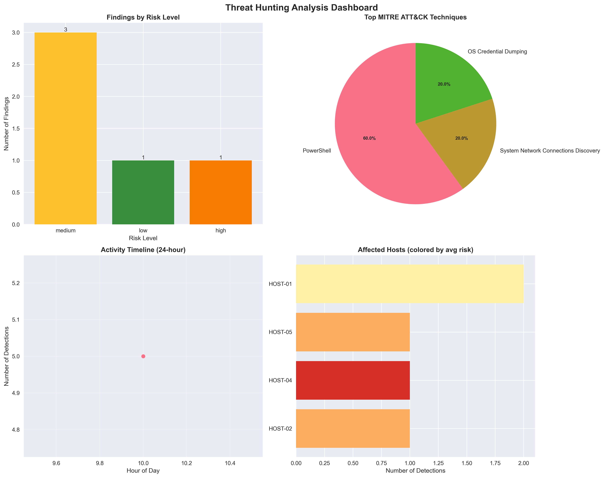

Executive Summary
Risk Distribution
High Risk: 1 |
Medium Risk: 3 |
Low Risk: 1
Recommendations
- Implement PowerShell logging and monitoring (Event ID 4104)
- Consider PowerShell Constrained Language Mode for non-admin users
- Review privileged account security and implement credential guard
- Audit recent password changes and suspicious logon activity
- Monitor network scanning and reconnaissance activities
- Implement network segmentation to limit lateral movement
- Immediate investigation required for 1 high-risk findings
- Consider isolating affected systems pending investigation
Detailed Findings
PowerShell Process Creation Keywords
2024-06-17 10:00:00 | HOST-01 | user1
Process: powershell.exe
Message: Process started
Risk Score: 70/100
T1059.001 PowerShell
🔗 MITRE ATT&CK Reference
Network Connections Discovery via Netstat
2024-06-17 10:20:00 | HOST-01 | user1
Process: netstat.exe
Message: netstat -an
Risk Score: 40/100
T1049 System Network Connections Discovery
🔗 MITRE ATT&CK Reference
WMIC usage for Credential Access
2024-06-17 10:25:00 | HOST-04 | admin
Process: wmic.exe
Message: wmic process list shadowcopy
Risk Score: 90/100
T1003 OS Credential Dumping
🔗 MITRE ATT&CK Reference
PowerShell Process Creation Keywords
2024-06-17 10:30:00 | HOST-02 | attacker
Process: powershell.exe
Message: powershell.exe -enc base64content
Risk Score: 70/100
T1059.001 PowerShell
🔗 MITRE ATT&CK Reference
PowerShell Process Creation Keywords
2024-06-17 10:35:00 | HOST-05 | user2
Process: pwsh.exe
Message: pwsh -Command Get-Process
Risk Score: 70/100
T1059.001 PowerShell
🔗 MITRE ATT&CK Reference
Threat Landscape Analysis
